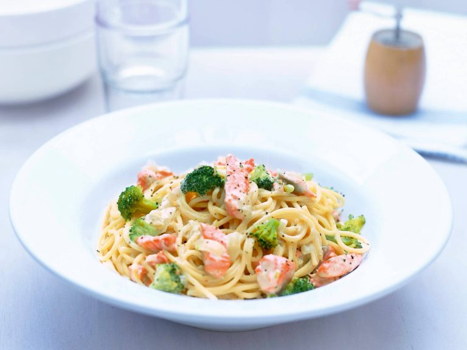

Salmon pasta
Back

"4" servings (not really) || Adapted/originally from Valio
One in the many lines of untested recipes.
This one's likely too unrealistic to ever make due to the ridiculous price of salmon.
- pack of frozen onions
- Pack of frozen broccoli
- 500g salmon (unrealistic)
- Can of Kippari cream
- 300g nauha-/tuorepasta/spaghetti
- Lemon pepper, salt
- Cook onions. Cook the broccoli in a bit of water with a dash of salt.
- Add in broccoli, salmon, lemon pepper and cream. Bring to boil.
- Boil pasta of your choice and mix together, warm up and serve immediately.